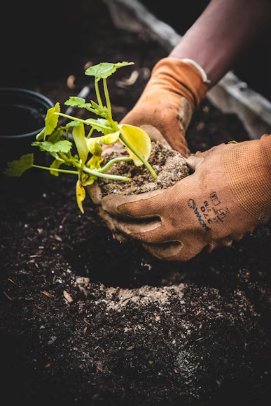
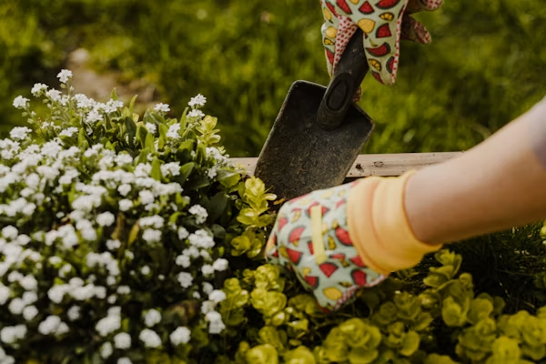

Site Name
Name: Urban Gardeners Collective
Description: This name was chosen to appeal to city dwellers interested in sustainable living and community-shared gardening spaces.
Optional Domain: urbangardeners.org
Site Purpose
The Urban Gardeners Collective site serves as a resource hub for city residents. It provides tips on balcony gardening, a map of local community garden plots, and a sign-up form for volunteer events.
Scenarios
- How do I start a vegetable garden on a small apartment balcony?
- How can I find the nearest community garden that accepts new members?
Color Schema
This document uses the following color scheme:
- Primary (#2E7D32): Used for all headings and major accents.
- Secondary (#F1F8E9): Used as the background color for the page.
- Text (#333333): Used for body paragraphs.
Typography
The following fonts are used throughout this document:
- Headings: "Playfair Display", serif.
- Body: "Roboto", sans-serif.
Wireframes
Mobile Wireframe

Desktop Wireframe
